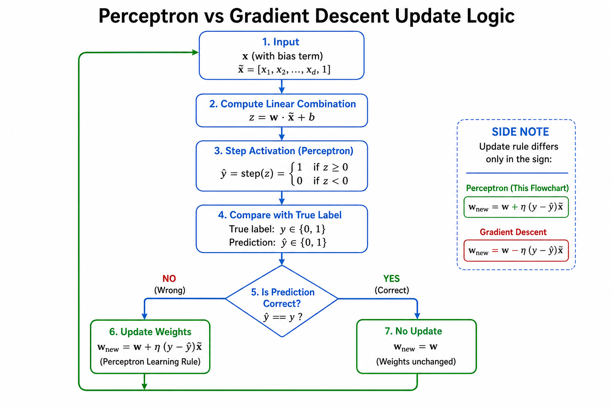
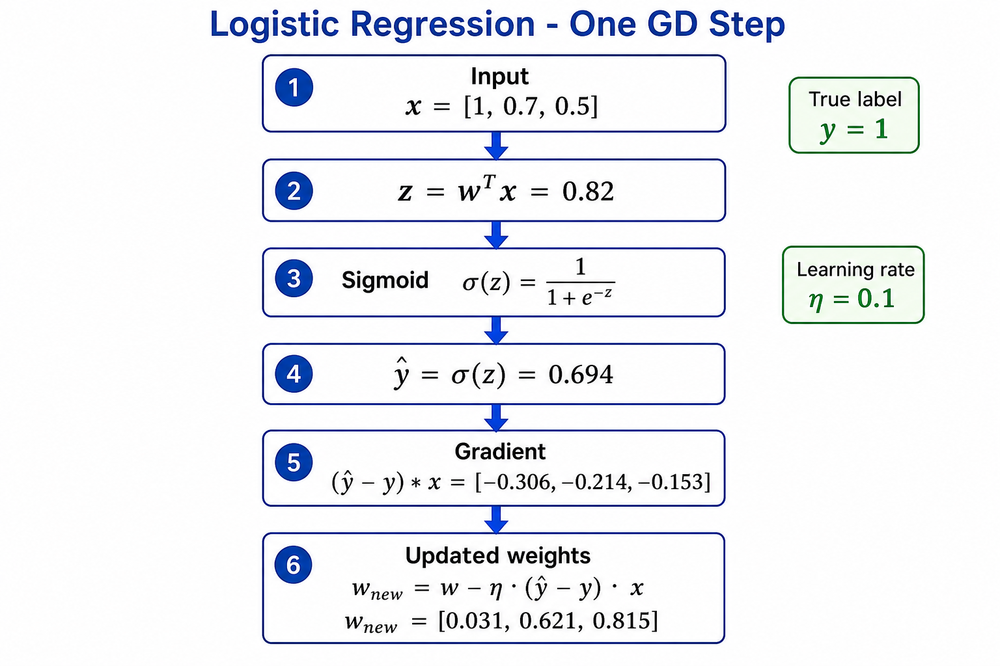
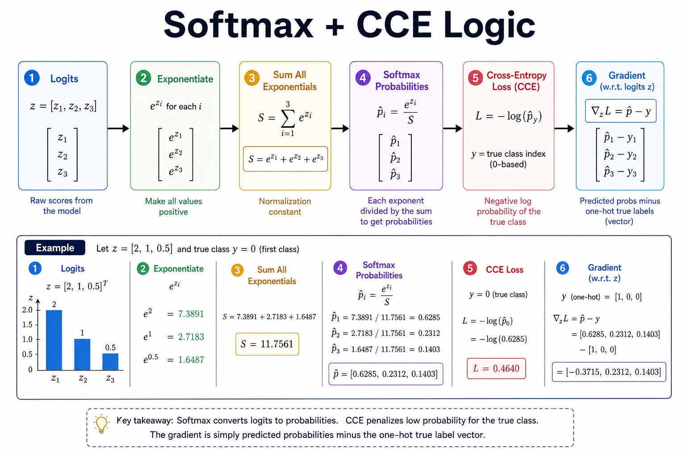
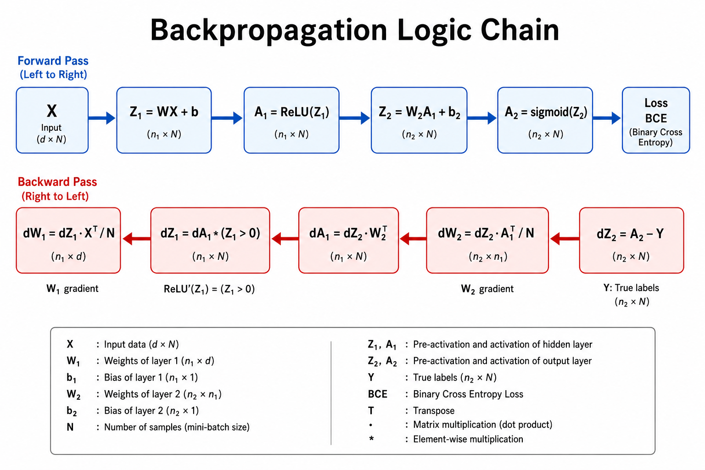
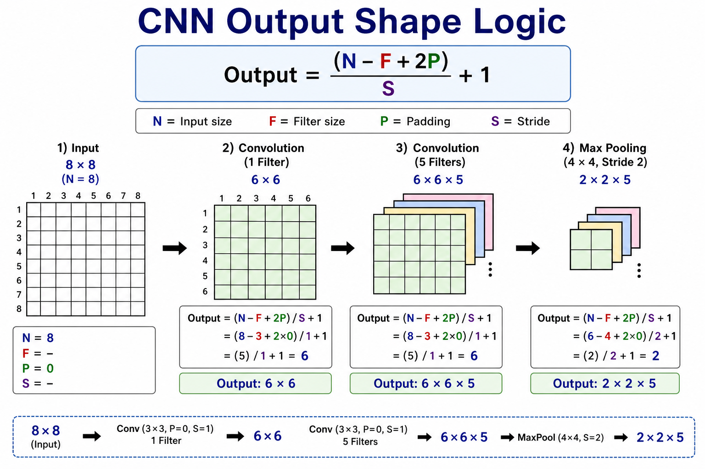
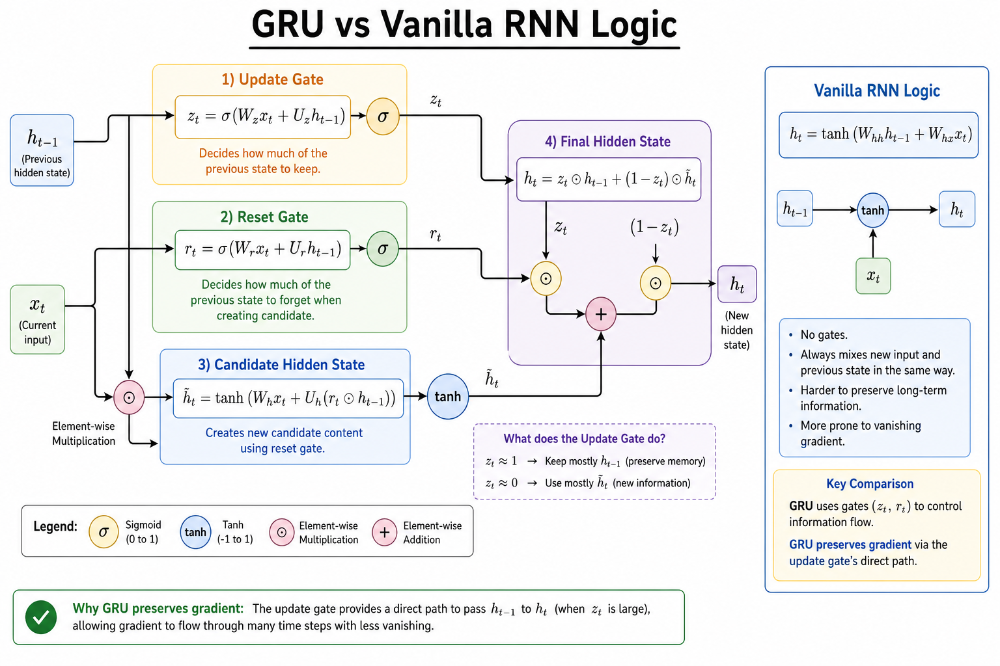
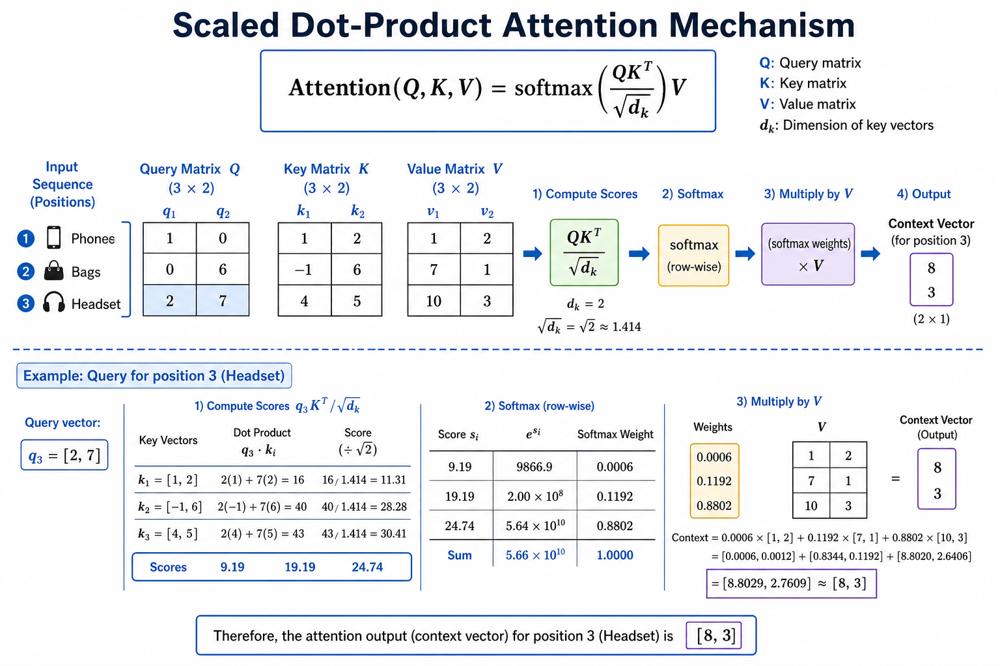
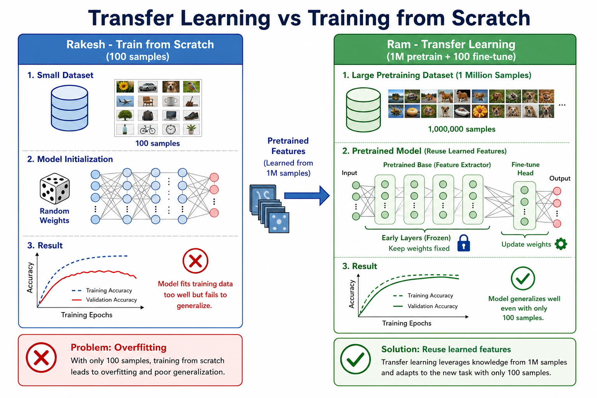
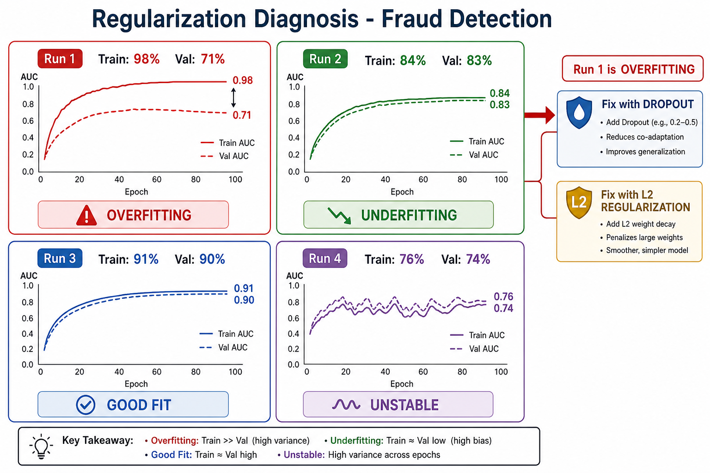
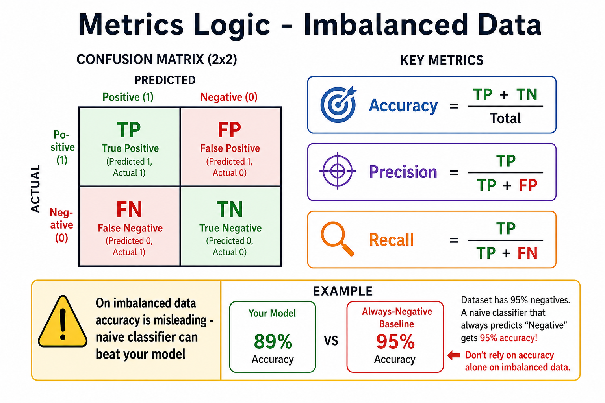

Practice Variant Questions — Exam Tweaks
V1 — Perceptron EC2 Q1 variantHIGH PRIORITY
w=[0.2,-0.5,0.3], x=[1,2,1], y=0, eta=0.1. Find z, y_hat, updated weights.

z
z = 0.2+2(-0.5)+0.3 = 0.2-1.0+0.3 = -0.5
z=-0.5
y_hat
-0.5<0 -> y_hat=0
y_hat=0
Update
y=0, y_hat=0 -> CORRECT -> no update
No update
V2 — Linear Regression EC2 Q2 variantHIGH PRIORITY
X=[[1,5],[1,15]], y=[100,200], w=[10,5], eta=0.01. One batch GD step.
Predict
y_hat=[35, 80]
[35,80]
MSE
[(100-35)^2+(200-80)^2]/2 = [4225+14400]/2 = 9312.5
MSE=9312.5
Grad
error=[-65,-120], grad=[-92.5,-987.5]
Update
w=[10.925, 14.875]
w=[10.925,14.875]
V3 — Logistic Regression EC2 Q3 variantHIGH PRIORITY
w=[0,1,-0.5], x=[1,0.8,0.6], y=0, eta=0.1.

z
z = 0.8-0.3 = 0.5
z=0.5
sigmoid
y_hat = 1/(1+e^-0.5) = 0.622
0.622
grad
(0.622-0)*[1,0.8,0.6] = [0.622,0.498,0.373]
update
w = [0,0.938,0.550] subtract grad*eta
w=[0, 0.876, 0.463]
V4 — Softmax EC2 Q4 variantHIGH PRIORITY
z=[1,3,2], y=[0,0,1] (class 2 true). Find probs, CCE, prediction.

exp
e^1=2.718, e^3=20.086, e^2=7.389, sum=30.193
probs
p=[0.090, 0.665, 0.245]
p=[0.09,0.67,0.25]
loss
CCE=-log(0.245)=1.41. Pred=class1 WRONG (true=2)
Loss=1.41, wrong
V5 — DFNN Forward EC2 Q5 variantHIGH PRIORITY
x=[1,0], W1=[[1,1],[0,1]], b1=[0,0], w2=[1,-1], b2=0, ReLU+sigmoid, y=1.

Z1
[1, 0]
Z1=[1,0]
A1
[1, 0] ReLU
A1=[1,0]
Out
z2=1, y_hat=0.731, BCE=0.313
Loss=0.313
V6 — CNN Shapes Mid Q2 variantHIGH PRIORITY
32x32 input, 5x5 kernel S=1 P=0, then 2x2 MaxPool S=2.

Conv
(32-5)/1+1 = 28 -> 28x28
28x28
Pool
(28-2)/2+1 = 14 -> 14x14
14x14
V7 — RNN/GRU EC3 Q4 variantHIGH PRIORITY
x_t=[1,0], h_{t-1}=[0,0], Whh=I, Whx=0.5I. Vanilla RNN step.

pre
Whh*h + Whx*x = [0,0]+[0.5,0] = [0.5,0]
h_t
tanh([0.5,0]) = [0.46, 0.0]
h=[0.46,0]
V8 — Attention EC3 Q5 variantHIGH PRIORITY
q=[2,7], k=[7,3], d_k=2. Scaled dot-product score.

score
q.k = 14+21 = 35, score = 35/sqrt(2) = 24.74
score=24.74
V9 — Transfer Learning Mid Q3 variant
500 images, 10 classes. Train ResNet from scratch vs fine-tune?

Fine-tune — 500 images too small for scratch training of deep CNN
V10 — Optimizer Diagnose EC3 Q7 variantHIGH PRIORITY
Train 96%, Val 68%. Diagnose and propose 2 fixes.

Diagnose
Large gap = OVERFITTING
Overfitting
Fix 1
Dropout p=0.5 — prevents co-adaptation
Fix 2
L2 weight decay — penalizes large weights
V11 — Precision/Recall EC2 Q4 variantHIGH PRIORITY
TP=80, FP=20, FN=10. Find precision and recall.

Precision
80/(80+20) = 80%
80%
Recall
80/(80+10) = 88.9%
88.9%
V12 — DFNN Params EC2 Q5 variantHIGH PRIORITY
Input(500)->Hidden(16)->Output(3). Count params (no bias).
Count
500*16 + 16*3 = 8000+48 = 8048
8048 params